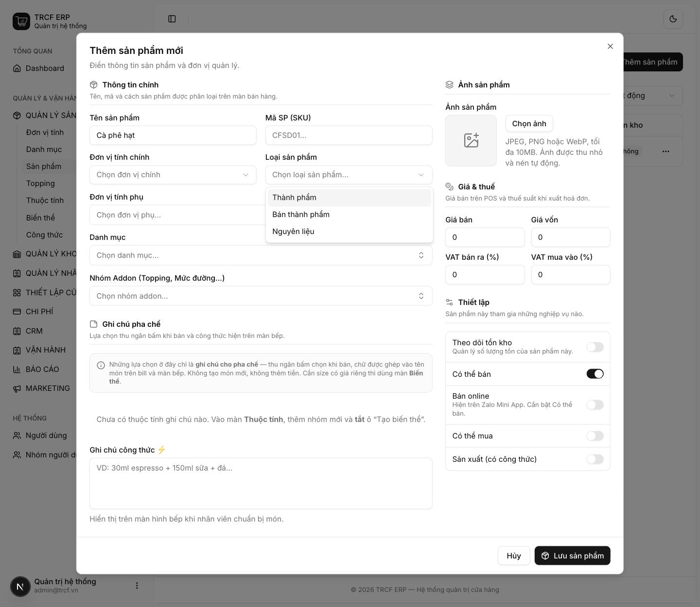
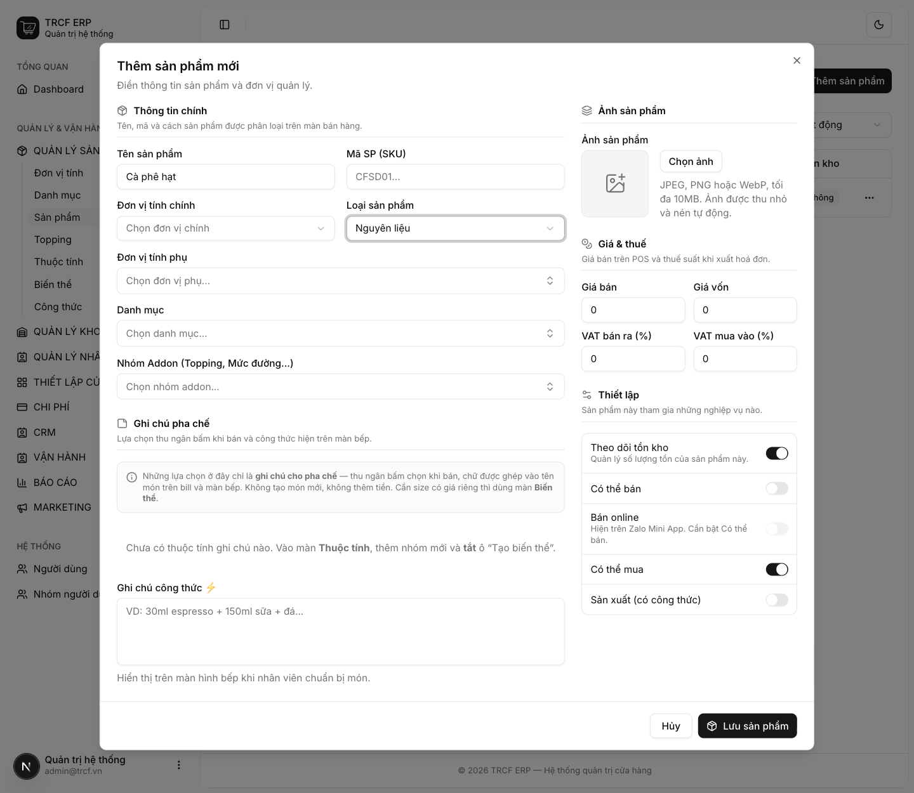
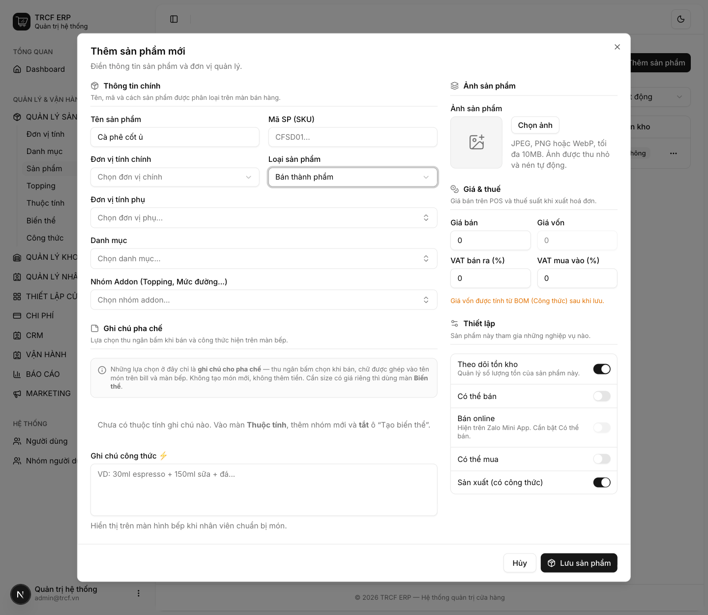
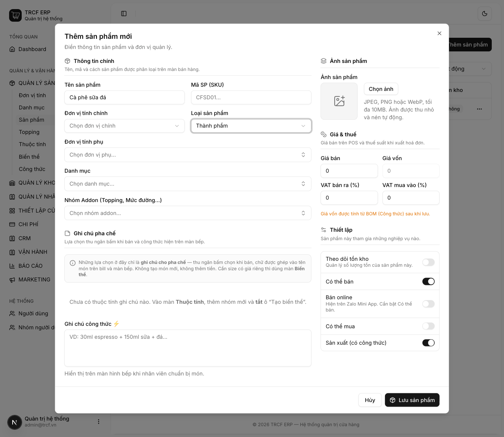

Chương 3 · Quản lý sản phẩm
3.3 Phân biệt Nguyên liệu – Bán thành phẩm – Thành phẩm
1. Đường dẫn vào chức năng
Menu trái: Quản lý sản phẩm → Sản phẩm → Thêm sản phẩm (địa chỉ /products).
- Trường liên quan: Loại sản phẩm trong form sản phẩm (mục 3.2).
2. Ví dụ nền và các bước thực hiện
Ví dụ: quán ủ sẵn cà phê cốt buổi sáng, cả ngày múc ra pha.
- "Cà phê hạt": mua về, dùng làm ra thứ khác → Nguyên liệu.
- "Cà phê cốt ủ": quán tự làm, chưa bán cho khách → Bán thành phẩm.
- "Cà phê sữa đá": món bán cho khách → Thành phẩm.
Bước 1Mở form và chọn Loại sản phẩm
- Vào Quản lý sản phẩm → Sản phẩm.
- Bấm Thêm sản phẩm.
- Bấm ô Loại sản phẩm.
- Có 3 lựa chọn: "Thành phẩm", "Bán thành phẩm", "Nguyên liệu".

Bước 2Nguyên liệu: "Cà phê hạt"
- Loại sản phẩm: chọn "Nguyên liệu".
- Bật Theo dõi tồn kho.
- Bật Có thể mua.
- Để tắt Có thể bán và Sản xuất.

Bước 3Bán thành phẩm: "Cà phê cốt ủ"
- Loại sản phẩm: chọn "Bán thành phẩm".
- Bật Sản xuất (có công thức).
- Bật Theo dõi tồn kho.
- Để tắt Có thể bán và Có thể mua.
- Ô Giá vốn xám lại: bình thường.

Bước 4Thành phẩm: "Cà phê sữa đá"
- Loại sản phẩm: chọn "Thành phẩm".
- Bật Có thể bán.
- Bật Sản xuất (có công thức).
- Để tắt Có thể mua.

3. Giải thích các trường
| Loại | Là gì | Ví dụ | Bật công tắc |
|---|---|---|---|
| Nguyên liệu | Mua để dùng, không bán trực tiếp, dùng làm ra thứ khác | Cà phê hạt, sữa đặc, đường, ly nhựa | Có thể mua · Theo dõi tồn kho |
| Bán thành phẩm | Quán tự làm, chưa bán cho khách, là đầu vào của món khác | Cà phê cốt ủ sẵn, trà ủ, syrup tự nấu | Sản xuất · Theo dõi tồn kho |
| Thành phẩm | Món bán cho khách | Cà phê sữa đá, trà đào | Có thể bán · Sản xuất |
Khi nào cần bán thành phẩm
Quán ủ sẵn một bình cà phê cốt buổi sáng, cả ngày múc ra pha. Tách thành 2 bước:
- Sáng: lập phiếu chế biến, trừ cà phê hạt, cộng "Cà phê cốt ủ" vào kho (mục 6.4).
- Cả ngày: mỗi ly bán ra trừ "Cà phê cốt ủ" theo công thức.
4. Lưu ý quan trọng
⚠️
Loại sản phẩm không tự đổi hành vi hệ thống.
- Hành vi do các công tắc quyết định.
- Loại là cách quán tự phân loại.
- Là căn cứ cho màn Rà soát vận hành (mục 8.3).
💡
Tách 2 bước giúp biết bình cốt còn bao nhiêu, và hao hụt nằm ở khâu ủ hay khâu bán.
💡
Quán nhỏ chưa cần chi tiết vậy: bỏ qua bán thành phẩm, cho món bán trừ thẳng nguyên liệu.